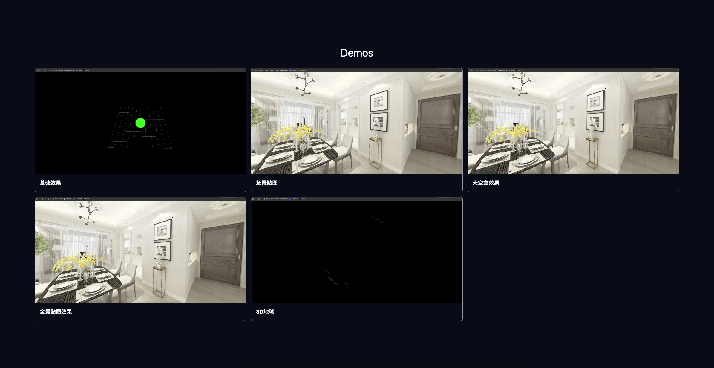
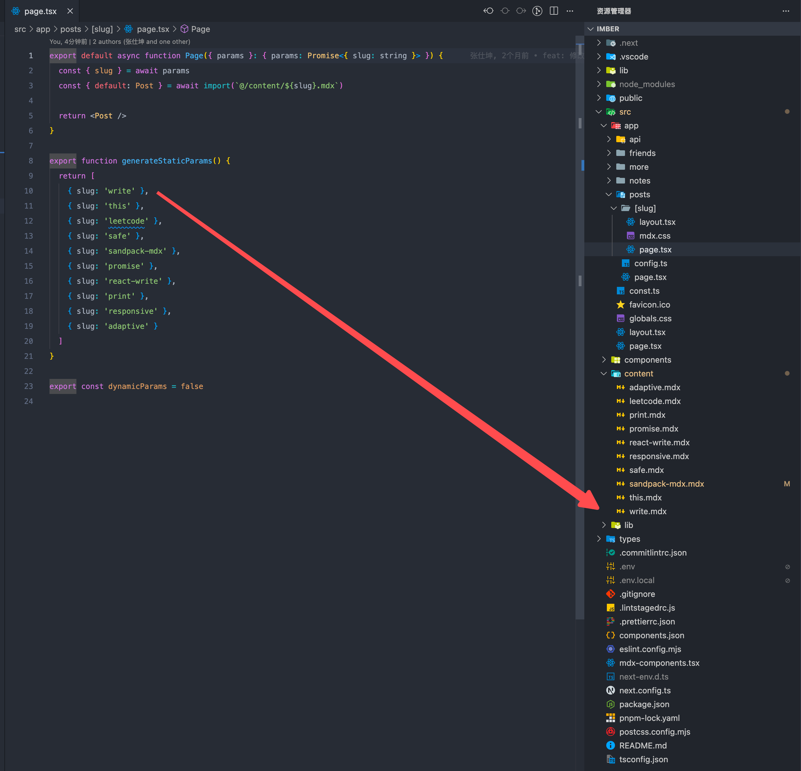

FRONTEND LAB / 2026
让界面拥有
清晰的结构与真实的动感。
从高级前端工程实践出发，记录动画、3D 交互与工程知识。这里既是可运行的实验场，也是持续整理的技术档案。
SELECTED WORK
三个方向，一个前端工作台
切换分类，查看可运行示例、场景预览与技术文档。
01 / MOTION
Web Animation Gallery
用 GSAP 与 Framer Motion 对照实现文字、布局、滚动和时间轴动画，保留可运行示例与源码。
- GSAP ScrollTrigger 与时间轴
- Framer Motion 布局与退出动画
- 响应式视频预览

02 / THREE.JS
Interactive 3D Scenes
覆盖基础场景、天空盒、全景看房、3D 地球与模型动画，呈现浏览器中的空间交互。
- Three.js 场景与材质
- 全景贴图与天空盒
- GLTF / FBX 模型动画

03 / KNOWLEDGE
Frontend Notes
围绕 React、Next.js、编辑器、工程化与 AI 编程积累的长篇笔记，保留完整目录和图片资源。
- React 与 Next.js 原理
- 编辑器与前端工程化
- AI 工具与 MCP 实践
ABOUT THE LAB
不只收藏效果，
也追问它为什么成立。
Imber Frontend 将视觉实验、工程实现和知识沉淀放在同一个站点中。顶部产品导航贯穿每个区域，各实验仍保留适合自身内容的交互方式。